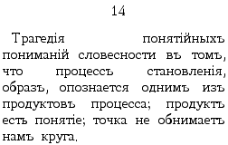
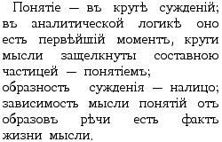
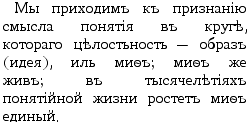
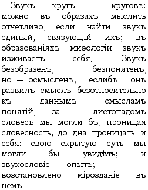

Glossolalia (Section 14)

The tragedy of comprehending the concepts [of conceptual comprehensions] of the written word lies in the fact, that the process of becoming, the image, is acknowledged as one of the products of the process; the product is a concept; the point does not embrace the circle for us.

A concept is -- inside a circle of judgements; in analytical logic it is the very first moment, circles of thought are latched by a constituent particle -- by the concept; the imagery of a judgement is -- in front of our faces; the dependence of the thought of the concepts upon the images of speech is a fact of life of thought.

We come to the recognition of the meaning of a concept inside the circle, the integrity of which is -- the image (the idea), or myth; myth is alive; in the millennia of conceptual life a single myth grows.

Sound is -- a circle of circles: one can think distinctly in images, if you find the single sound tying them together; in the formations of mythology sound outlives itself. Sound is imageless, incomprehensible, but -- meaningful; if it had developed a meaning unrelated to the given meanings of the concepts, -- beyond the falling leaves of words we would be able, as we penetrate the written word, to penetrate to the bottom inside of ourselves: we would be able to view our own concealed essence; and the sound-word is -- an attempt; in the sound-word the universe is restored.